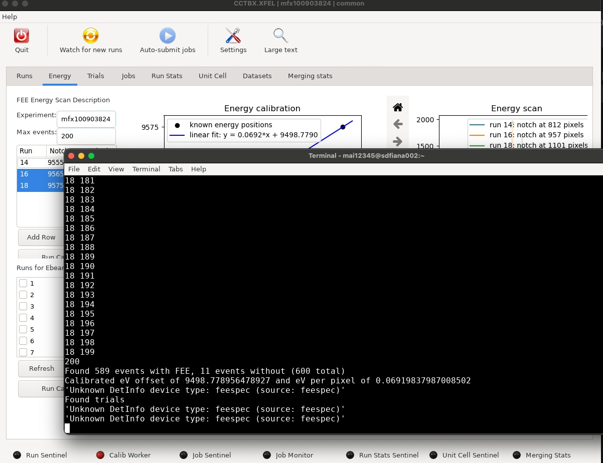
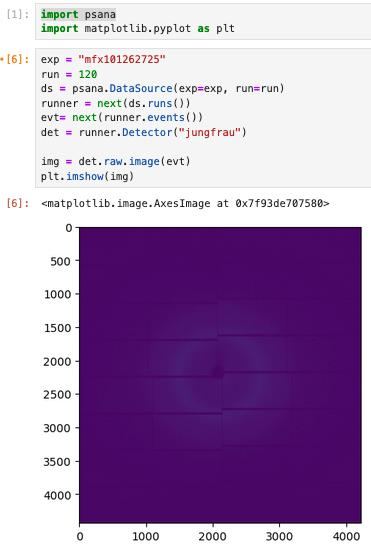
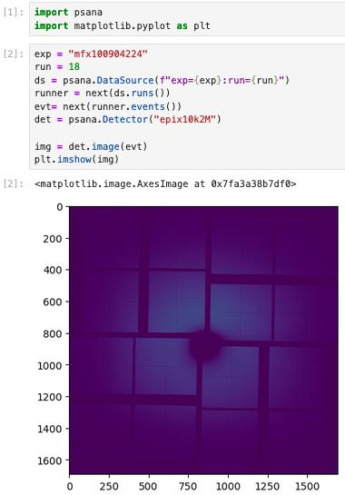
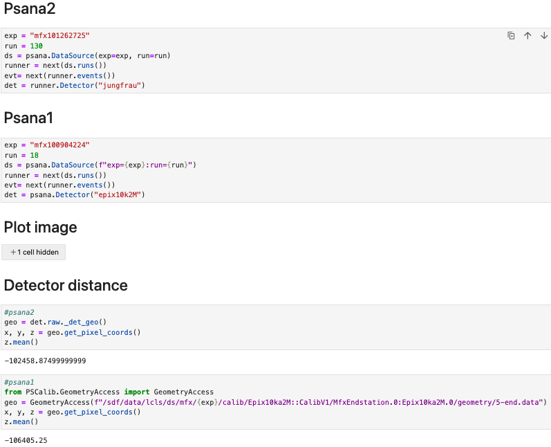
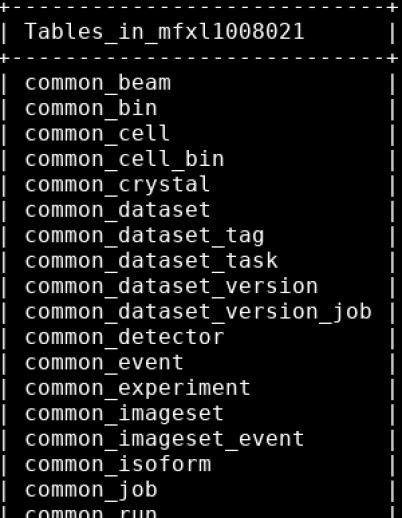
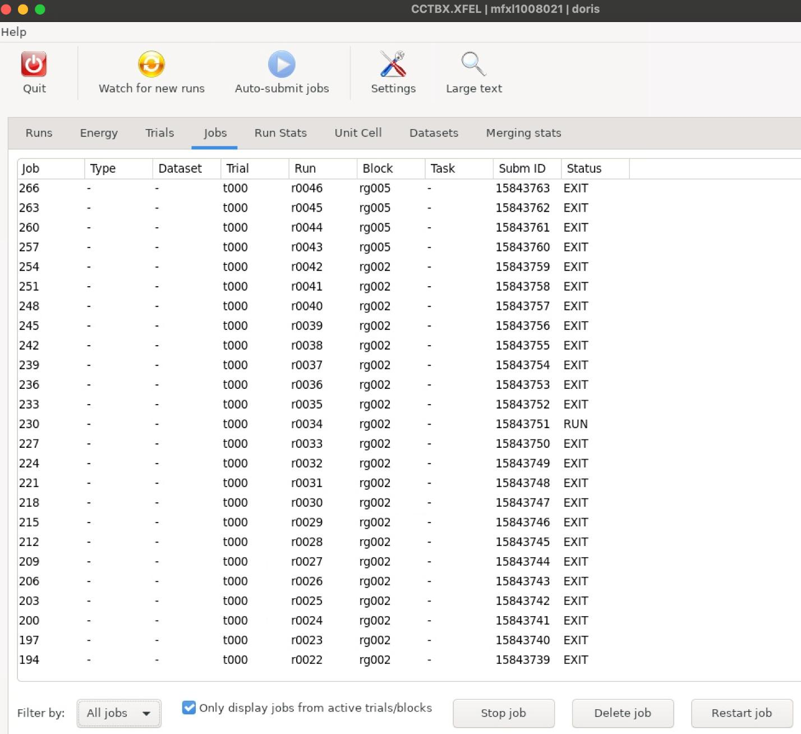

Review all the red warning texts listed previously in this document that begin with , as the resulting errors are not necessarily covered here.
Failed/red sentinel / unresponsive GUI
Sometimes if a particular page of the GUI goes wrong (indicated by the red sentinel), it can become unresponsive. For example, in this case the ebeam calibration has errors and
“Calib Worker” sentinel becomes red:
You might get away by switching to another page (e.g. “Trials”) and then come back to
“Energy” page to re-run the calibration work.
No jobs submitted
Error:
Multiple lines on the terminal like:
Warning, expected to find submitted [xxx] job: trial [xxx], rungroup[xxx], run [xxx]
Solution:
Check if you have properly defined the chain of tasks under the active dataset. In particular, did you have Indexing listed first?
If Indexing task was there, did it have integrate=False under the trial definition? If that’s the case, you either need another indexing task that does integration or have ensemble refinement task here.
Look at parameters available to tweak for dials programs
[dials progam name] -ca 2 –e 10 is a good place to start.
Look at some example diffraction images
You can look through the raw images using dials.image_viewer data.loc load_models=False. And remember data.loc is just specifying parameters for psana, so you can make one from scratch / modify from another data.loc file rather than waiting for the GUI indexing task to generate for you.
0. Source the right cctbx environment. If necessary, maybe also check if that it was built in the right psana environment.
1. Make a data.loc file if you don’t already have one. An example file with minimal entries look like this:
experiment=mfx101262725
run=532
detector_address=jungfrau mode=psana2_idx # only for psana2
This is only a minimal set of entries. You might need other things like specifying wavelength fallback and spectrum address etc. depending on the errors you get when launching dials.image_viewer. Refer to “Check FormatXTC and data.loc” section below (and maybe also “Check psana detnames output” section).
2. Launch images via the terminal:
dials.image_viewer data.loc load_models=False
This command lets you see the unindexed images of a run.
To look at indexed images, you would replace data.loc with the paths to the corresponding .expt and .refl files in the command. For example:
dials.image_viewer out/idx-050_*.{expt,refl} load_models=False
If you encounter errors with dials.image_viewer, refer to the “Dials.image_viewer related issues” section below.
Visualize directly through psana in Jupyter Notebook
Not recommended, as it is very inefficient, but if you must do this for some reason, open a jupyter notebook through ondemand interactive session, and use the following code snippets depending on psana version.
Psana2 (left) Psana1 (right)
Check psana detnames output
This can be useful to check if entries are missing (e.g. eBeam), and correct names of detector/spectrum addresses to access XTC files via data.loc (either manually added or provided as “Extra xtc format parameters” in the GUI) or custom psana code.
For psana1: detnames exp=:run=
For psana2: detnames exp=,run=
Psana2 have additional flags to enable looking at scan data for example.
Check FormatXTC and data.loc
Failure of this can manifest as failed to submit indexing jobs, as well as failure to open dials.image_viewer. FormatXTC is a script in cctbx:
dxtbx/src/dxtbx/format/FormatXTC.py.
All the solutions below that involve manually editing data.loc file are just for debugging purposes. To properly generate the data.loc file, remember to enter the lines into cctbx.xfel
GUI run group definition as “Extra xtc format parameters”.
Spectrum/Detector address – 2025/11:
Error:
Traceback (most recent call last): File
“/sdf/group/lcls/ds/tools/cctbx/psana1/build/../modules/dials/src/dials/command_line/i mage_viewer.py”, line 213, in run() File
“/sdf/group/lcls/ds/tools/cctbx/psana1/conda_base_psana1/lib/python3.11/contextlib.py
“, line 81, in inner return func(args, *kwds) ^^^^^^^^^^^^^^^^^^^ File
“/sdf/group/lcls/ds/tools/cctbx/psana1/build/../modules/dials/src/dials/command_line/i mage_viewer.py”, line 209, in run show_image_viewer(params=params, reflections=reflections, experiments=experiments) File
“/sdf/group/lcls/ds/tools/cctbx/psana1/build/../modules/dials/src/dials/command_line/i mage_viewer.py”, line 174, in show_image_viewer wrapper.display(experiments=experiments, reflections=reflections) File
“/sdf/group/lcls/ds/tools/cctbx/psana1/modules/dials/src/dials/util/image_viewer/spotfin der_wrap.py”, line 86, in display self.frame.load_image(chooser_wrapper(imagesets[0], 0))
File
“/sdf/group/lcls/ds/tools/cctbx/psana1/modules/dials/src/dials/util/image_viewer/spotfin der_frame.py”, line 657, in load_image super().load_image( File
“/sdf/group/lcls/ds/tools/cctbx/psana1/modules/dials/src/dials/util/image_viewer/slip_vi ewer/frame.py”, line 438, in load_image self.pyslip.tiles.set_image( File
“/sdf/group/lcls/ds/tools/cctbx/psana1/modules/dials/src/dials/util/image_viewer/slip_vi ewer/tile_generation.py”, line 70, in set_image self.raw_image.set_image_data(get_image_data(self.raw_image))
^^^^^^^^^^^^^^^^^^^^^^^^^^^^^^ File
“/sdf/group/lcls/ds/tools/cctbx/psana1/modules/dials/src/dials/util/image_viewer/spotfin der_frame.py”, line 851, in get_image_data image_data = image.get_image_data()
^^^^^^^^^^^^^^^^^^^^^^ File
“/sdf/group/lcls/ds/tools/cctbx/psana1/modules/dials/src/dials/util/image_viewer/slip_vi
ewer/frame.py”, line 57, in get_image_data return self.image_set.get_corrected_data(self.index)
^^^^^^^^^^^^^^^^^^^^^^^^^^^^^^^^^^^^^^^^^^^^^ File
“/sdf/group/lcls/ds/tools/cctbx/psana1/modules/dxtbx/src/dxtbx/imageset.py”, line 290, in get_corrected_data return super().get_corrected_data(index)
^^^^^^^^^^^^^^^^^^^^^^^^^^^^^^^^^ File
“/sdf/group/lcls/ds/tools/cctbx/psana1/modules/dxtbx/src/dxtbx/format/FormatMultiIma ge.py”, line 47, in read return format_instance.get_raw_data(index)
^^^^^^^^^^^^^^^^^^^^^^^^^^^^^^^^^^^ File
“/sdf/group/lcls/ds/tools/cctbx/psana1/modules/dxtbx/src/dxtbx/format/FormatXTCEpix.
py”, line 38, in get_raw_data d = FormatXTCEpix.get_detector(self, index)
^^^^^^^^^^^^^^^^^^^^^^^^^^^^^^^^^^^^^^^ File
“/sdf/group/lcls/ds/tools/cctbx/psana1/modules/dxtbx/src/dxtbx/format/FormatXTCEpix.
py”, line 65, in get_detector return FormatXTCEpix._detector(self, index)
^^^^^^^^^^^^^^^^^^^^^^^^^^^^^^^^^^^^ File
“/sdf/group/lcls/ds/tools/cctbx/psana1/modules/dxtbx/src/dxtbx/format/FormatXTCEpix.
py”, line 93, in _detector wavelength = self.get_beam(index).get_wavelength()
^^^^^^^^^^^^^^^^^^^^ File
“/sdf/group/lcls/ds/tools/cctbx/psana1/modules/dxtbx/src/dxtbx/format/FormatXTC.py”, line 566, in get_beam return self._beam(index) ^^^^^^^^^^^^^^^^^ File
“/sdf/group/lcls/ds/tools/cctbx/psana1/modules/dxtbx/src/dxtbx/format/FormatXTC.py”, line 593, in _beam spectrum = self.get_spectrum(index) ^^^^^^^^^^^^^^^^^^^^^^^^ File
“/sdf/group/lcls/ds/tools/cctbx/psana1/modules/dxtbx/src/dxtbx/format/FormatXTC.py”, line 637, in get_spectrum spectrum = self._spectrum(index) ^^^^^^^^^^^^^^^^^^^^^ File
“/sdf/group/lcls/ds/tools/cctbx/psana1/modules/dxtbx/src/dxtbx/format/FormatXTC.py”, line 657, in _spectrum self._fee = psana.Detector(self.params.spectrum_address)
^^^^^^^^^^^^^^^^^^^^^^^^^^^^^^^^^^^^^^^^^^^^ File
“/sdf/group/lcls/ds/tools/cctbx/psana1/conda_base_psana1/lib/python3.11/sitepackages/psana/det_interface.py”, line 58, in Detector return _detector_factory(name, env, accept_missing=accept_missing)
^^^^^^^^^^^^^^^^^^^^^^^^^^^^^^^^^^^^^^^^^^^^^^^^^^^^^^^^^^^ File
“/sdf/group/lcls/ds/tools/cctbx/psana1/conda_base_psana1/lib/python3.11/sitepackages/Detector/PyDetector.py”, line 111, in detector_factory dtype =
dettype(source_string, env, args, *kwargs)
^^^^^^^^^^^^^^^^^^^^^^^^^^^^^^^^^^^^^^^^^^^^ File
“/sdf/group/lcls/ds/tools/cctbx/psana1/conda_base_psana1/lib/python3.11/sitepackages/Detector/PyDetector.py”, line 228, in dettype raise KeyError(‘Unknown DetInfo device type: %s (source: %s)’
KeyError: ‘Please report this error at https://github.com/dials/dials/issues or to dials-usergroup@jiscmail.ac.uk: Unknown DetInfo device type: feespec (source: feespec)’
Solution:
First check psana output validity:
For example, in this psana1 experiment:
(ana-4.0.66-py3) [fpoitevi@sdfiana004 009_rg027]$ detnames exp=mfx100904224:run=8
Full Name | DAQ Alias | User Alias
FEE-SPEC0 | |
MFX-DG1-BMMON | |
MFX-DG2-BMMON | |
NoDetector.0:Evr.0 | evr0 |
MfxEndstation.0:Epix10ka2M.0 | epix10k2M |
ControlData | |
This means in the data.loc file, add a line:
spectrum_address=FEE-SPEC0
Missing eBeam – 2025/11
Error:
Traceback (most recent call last): File
“/sdf/group/lcls/ds/tools/cctbx/psana1/build/../modules/dials/src/dials/command_line/i mage_viewer.py”, line 213, in run() File
“/sdf/group/lcls/ds/tools/cctbx/psana1/conda_base_psana1/lib/python3.11/contextlib.py
“, line 81, in inner return func(args, *kwds) ^^^^^^^^^^^^^^^^^^^ File
“/sdf/group/lcls/ds/tools/cctbx/psana1/build/../modules/dials/src/dials/command_line/i mage_viewer.py”, line 209, in run show_image_viewer(params=params, reflections=reflections, experiments=experiments) File
“/sdf/group/lcls/ds/tools/cctbx/psana1/build/../modules/dials/src/dials/command_line/i mage_viewer.py”, line 174, in show_image_viewer wrapper.display(experiments=experiments, reflections=reflections) File
“/sdf/group/lcls/ds/tools/cctbx/psana1/modules/dials/src/dials/util/image_viewer/spotfin der_wrap.py”, line 86, in display self.frame.load_image(chooser_wrapper(imagesets[0], 0))
File
“/sdf/group/lcls/ds/tools/cctbx/psana1/modules/dials/src/dials/util/image_viewer/spotfin der_frame.py”, line 657, in load_image super().load_image( File
“/sdf/group/lcls/ds/tools/cctbx/psana1/modules/dials/src/dials/util/image_viewer/slip_vi ewer/frame.py”, line 417, in load_image img = rv_image(file_name_or_data)
^^^^^^^^^^^^^^^^^^^^^^^^^^^ File
“/sdf/group/lcls/ds/tools/cctbx/psana1/modules/cctbx_project/rstbx/viewer/init.py”, line
248, in init detector = self._raw.get_detector() ^^^^^^^^^^^^^^^^^^^^^^^^ File
“/sdf/group/lcls/ds/tools/cctbx/psana1/modules/dials/src/dials/util/image_viewer/slip_vi ewer/frame.py”, line 43, in get_detector return self.image_set.get_detector()
^^^^^^^^^^^^^^^^^^^^^^^^^^^^^ File
“/sdf/group/lcls/ds/tools/cctbx/psana1/modules/dxtbx/src/dxtbx/imageset.py”, line 242, in get_detector return self._get_item_from_parent_or_format(“detector”, index)
^^^^^^^^^^^^^^^^^^^^^^^^^^^^^^^^^^^^^^^^^^^^^^^^^^^^^^^ File
“/sdf/group/lcls/ds/tools/cctbx/psana1/modules/dxtbx/src/dxtbx/imageset.py”, line 236, in _get_item_from_parent_or_format item = getter_function(self.indices()[index])
^^^^^^^^^^^^^^^^^^^^^^^^^^^^^^^^^^^^^^ File
“/sdf/group/lcls/ds/tools/cctbx/psana1/modules/dxtbx/src/dxtbx/format/FormatXTCEpix.
py”, line 65, in get_detector return FormatXTCEpix._detector(self, index)
^^^^^^^^^^^^^^^^^^^^^^^^^^^^^^^^^^^^ File
“/sdf/group/lcls/ds/tools/cctbx/psana1/modules/dxtbx/src/dxtbx/format/FormatXTCEpix.
py”, line 93, in _detector wavelength = self.get_beam(index).get_wavelength()
^^^^^^^^^^^^^^^^^^^^ File
“/sdf/group/lcls/ds/tools/cctbx/psana1/modules/dxtbx/src/dxtbx/format/FormatXTC.py”, line 566, in get_beam return self._beam(index) ^^^^^^^^^^^^^^^^^ File
“/sdf/group/lcls/ds/tools/cctbx/psana1/modules/dxtbx/src/dxtbx/format/FormatXTC.py”, line 627, in _beam if self._beam_cache.get_wavelength() < 0.1:
^^^^^^^^^^^^^^^^^^^^^^^^^^^^^^^
AttributeError: Please report this error at https://github.com/dials/dials/issues or to dialsuser-group@jiscmail.ac.uk: ‘NoneType’ object has no attribute ‘get_wavelength’
Solution:
In the data.loc file, add a line like:
wavelength_fallback=1.443
‘NoneType’ object has no attribute ‘mode’ – 2025/11
Error:
Sorry: Unable to handle the following arguments: “idx-0008_refined.expt” failed during
ExperimentList processing: Traceback (most recent call last): File
“/sdf/group/lcls/ds/tools/cctbx/psana1/modules/dials/src/dials/util/options.py”, line 321,
in try_read_experiments data=ExperimentListFactory.from_json_file( ^^^^^^^^^^^^^^^^^^^^^^^^^^^^^^^^^^^^^
File
“/sdf/group/lcls/ds/tools/cctbx/psana1/modules/dxtbx/src/dxtbx/model/experiment_list.p y”, line 908, in from_json_file return
ExperimentListFactory.from_json( ^^^^^^^^^^^^^^^^^^^^^^^^^^^^^^^^ File
“/sdf/group/lcls/ds/tools/cctbx/psana1/modules/dxtbx/src/dxtbx/model/experiment_list.p y”, line 895, in from_json return
ExperimentListFactory.from_dict( ^^^^^^^^^^^^^^^^^^^^^^^^^^^^^^^^ File
“/sdf/group/lcls/ds/tools/cctbx/psana1/modules/dxtbx/src/dxtbx/model/experiment_list.p y”, line 885, in from_dict ).decode() ^^^^^^^^ File
“/sdf/group/lcls/ds/tools/cctbx/psana1/modules/dxtbx/src/dxtbx/model/experiment_list.p y”, line 493, in decode imageset = self._imageset_from_imageset_data(imageset_data, models) ^^^^^^^^^^^^^^^^^^^^^^^^^^^^^^^^^^^^^^^^^^^^^^^^^^^^^^^^ File
“/sdf/group/lcls/ds/tools/cctbx/psana1/modules/dxtbx/src/dxtbx/model/experiment_list.p y”, line 347, in _imageset_from_imageset_data imageset =
self._make_stills(imageset_data, format_kwargs=format_kwargs)
^^^^^^^^^^^^^^^^^^^^^^^^^^^^^^^^^^^^^^^^^^^^^^^^^^^^^^^^^^^^^ File
“/sdf/group/lcls/ds/tools/cctbx/psana1/modules/dxtbx/src/dxtbx/model/experiment_list.p y”, line 536, in _make_stills return
ImageSetFactory.make_imageset( ^^^^^^^^^^^^^^^^^^^^^^^^^^^^^^ File
“/sdf/group/lcls/ds/tools/cctbx/psana1/modules/dxtbx/src/dxtbx/imageset.py”, line 562, in make_imageset return format_class.get_imageset( ^^^^^^^^^^^^^^^^^^^^^^^^^^ File
“/sdf/group/lcls/ds/tools/cctbx/psana1/modules/dxtbx/src/dxtbx/format/FormatMultiIma ge.py”, line 161, in get_imageset format_instance = cls.get_instance(filenames[0], format_kwargs) ^^^^^^^^^^^^^^^^^^^^^^^^^^^^^^^^^^^^^^^^^^^^^^^ File
“/sdf/group/lcls/ds/tools/cctbx/psana1/modules/dxtbx/src/dxtbx/format/Format.py”, line
275, in get_instance Class.current_instance = Class(filename, kwargs)
^^^^^^^^^^^^^^^^^^^^^^^^^ File
“/sdf/group/lcls/ds/tools/cctbx/psana1/modules/dxtbx/src/dxtbx/format/FormatXTCEpix.
py”, line 24, in init super().init(image_file, locator_scope=epix_locator_scope, **kwargs)
File
“/sdf/group/lcls/ds/tools/cctbx/psana1/modules/dxtbx/src/dxtbx/format/FormatXTC.py”, line 180, in init assert self.params.mode in [ ^^^^^^^^^^^^^^^^
AttributeError: ‘NoneType’ object has no attribute ‘mode’
Solution:
This is very non-descriptive error message, which is NOT referring to the mode=idx or mode=psana2_idx. Instead, I think this error shows up when you have a typo in the data.loc file. For example, it shows when I misspelled wavelength_fallback.
Dials.image_viewer related issues – 2025/11
If you encounter errors when trying to visualize images through dials.image_viewer, explore the debugging approaches below.
- Check psana detnames output (see section above)
- Check FormatXTC and data.loc (see section above)
Check psana versions in cctbx build:
In the terminal: libtbx.python -c “import psana; print(getattr(psana, ‘xtc_version’, None))”
If psana1, should return None.
In the terminal: libtbx.python -c “from dxtbx.format.FormatXTCEpix import FormatXTCEpix; FormatXTCEpix(‘data.loc’)”
With psana1, should return no error.
Check psana geometry
This can be an issue for psana2 for example, when BayFAI was deployed but the result was not successfully pushed to the database. To quickly check if psana understand the geometry correctly (is it default metrology or BayFAI) for GUI to access, you can use the following code snippets provided by Louis to check.
Database related – 2025/11
If you suspect issues related to the database, e.g. mysql error shows up in the terminal as you launch the GUI or attemp to submit jobs through the GUI, you can do some basic checking with mysql command in the terminal:
mysql -h 172.24.5.182 -u <experiment> <experiment> -p
After typing password, some helpful commands to explore include (semicolon is needed):
mysql> show tables;
SELECT * FROM common_job LIMIT 10; SELECT * FROM common_task LIMIT 3; Failed jobs, hanging job, and resubmit jobs – 2025/10
You might want to resubmit jobs that failed or exited but you think they should have worked
(e.g. failed due to xtc file transfer not complete yet). I have also seen at reprocessing stage, a few jobs just mysteriously fail the first time submitted but second time runs fine.
Alternatively, you might know something went wrong but the jobs haven’t finished or appear hanging forever. Typically, a cctbx job should not run more than 10 minutes. In those cases, you want to manually kill the jobs.
After you see the status of a job becomes “EXIT”, you can click on that job row (or select across multiple rows) and then click “Restart job” at the bottom right. It might take a few seconds for the old job to disappear and a new job to appear (remember to have the “Autosubmit jobs” turned on).
To avoid hanging jobs due to premature start before xtc file transfer finishes, during beamtime (real-time) processing, I might sometimes disable and then re-enable
“Autosubmit jobs” to create a little delay to avoid that situation.
Failure to index – 2025/11
This section assumes that the indexing job cannot be submitted or cannot properly finish.
If the indexing job apparently finishes without concerning errors, look at the section below
“Low indexing rate” – in particular, is your initial geometry totally off?
- Are the XTC files there? This is important to check if you are reprocessing old experiments which might have data moved to tape. If there are no .xtc files directly under /sdf/data/lcls/ds/mfx/experiment_number/xtc, you need to contact
Wilko/pcds-datamgt-l email list. Once the files transfer is done, check if it has the correct permission (read for ps-data group).
- Is your data.loc file correct? Is cctbx build in the right psana environment? Refer to
“Check psana detnames output” and “Check FormatXTC and data.loc” sections above. A quick test is if you can successfully launch dials.image_viewer to look at some images using the GUI generated data.loc.
- Are you missing ebeam and need wavelength_fallback information added to data.loc? Refer to “Check if eBeam is in xtc” section below and “Check FormatXTC
and data.loc” section above.
Low indexing rate – 2025/11
- Is it a bad/short run? Do you have any image that looks like good diffraction?
Identifying a few good ones is helpful for testing and improving indexing related parameters. Refer to the section “Look at some example diffraction images” above.
- Do you at least have good spot finding (hit finding) rate? If not, explore those parameters first in dials.image_viewer. Refer to the chapter “Spot finding parameters exploration.”
- Do you have proper masking of pixels that shouldn’t be identified as spot? Refer to the chapter “How to make a mask”.
- If you have okay hit rate but low indexing rate, have you refined the geometry? Refer to the chapter “Geometry Refinement”
Check if eBeam is in xtc– 2025/11
There is a helpful script from Fred (only for psana2). The command to use it is:
python test_ebeam.py --exp <experiment> --run <run>
The full script is attached below:
from psana import DataSource import argparse parser = argparse.ArgumentParser(description=”Get a list of ebeam photon energies from psana2. Make sure you are in psana2
environment.”) parser.add_argument(‘–exp’, required=True, type=str, help=’Experiment name.’) parser.add_argument(‘–run’, required=True, type=int, help=’Run number.’) parser.add_argument(‘–nevents’, required=False, type=int, default=1000, help=’Number of events to process. Defaults to 1000.’)
args = parser.parse_args()
exp = args.exp run = args.run nevents = args.nevents
ds = DataSource(exp=exp, run=run, detectors=[‘ebeamh’], max_events=nevents) myrun = next(ds.runs()) nevent=0
damaged=0
for nevt,evt in enumerate(myrun.events()):
nevent+=1
ebeam = evt.run().Detector(‘ebeamh’) hu = ebeam.raw.ebeamPhotonEnergy(evt) if hu is None:
damaged+=1
else:
print(hu) print(f’{damaged}/{nevent}’)
Check if event codes are in xtc – 2025/10
Similar to the script above to check ebeam, for the core piece of code, replace with follows:
ds = DataSource(exp=exp, run=run, max_events=nevents) myrun = next(ds.runs()) timing = myrun.Detector(‘timing’) for nevt,evt in enumerate(myrun.events()):
allcodes = timing.raw.eventcodes(evt)
# make a list of indexes where allcodes is 1
usedcodes = [i for i, code in enumerate(allcodes) if code == 1] print(usedcodes) if nevt >= nevents: break
Failure to merge
If merging job appears “EXIT”, is it because of no google drive publishing parameters provided (which is harmless, the job actually finished fine), or something else? Check the err.out to confirm.
Workaround (last resort) if previous processing went very wrong
If something previous tasks went really wrong that prevented you from continue (e.g.
submitting new tasks for new datasets), a last resort is to make a new experiment tag and start over (all the way from tagging the runs). This happened to mfxl1008021, where at some point, a custom build was used to run abismal task. In later attempts to reprocess using the official build, abismal task is not supported and considered NoneType in the processing database that prevented submitting any new task.
Figures (from PDF)





